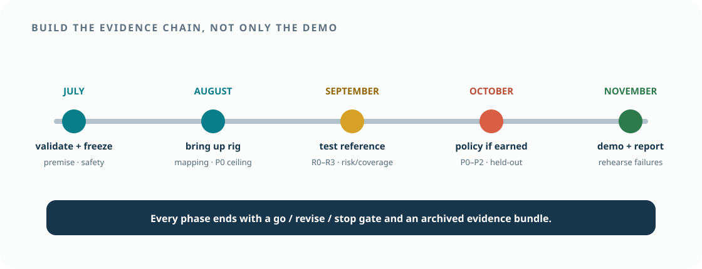

Hackathon value
A legible human–AI–robot interaction tied to wrong-pick and workflow cost in high-mix manufacturing/logistics.
Team playbook · July–November 2026
The schedule protects one demonstrable path—look, speak, confirm, guarded pick-and-place—while model adaptation, user study, and industrial scenario work proceed behind explicit gates. Every phase ends with an artifact that another team member can reproduce.

01 · North star
Team decisions should shorten the path to the same observable outcome. Additions that do not improve this episode, its evidence, or its robustness move to the backlog.
An operator looks at one of several similar parts in the robot-camera view, says its destination, verifies the system’s uncertainty-aware proposal, and a guarded xArm places the correct part while the episode is fully replayable.
A legible human–AI–robot interaction tied to wrong-pick and workflow cost in high-mix manufacturing/logistics.
A matched test of whether gaze helps, whether VLA helps beyond classical grounding, and whether adaptation helps beyond prompting.
A concrete interface where process scenarios, object selection, UI/data visualization, and fixture/safety expertise materially change the outcome.
02 · Milestones
The final month is for evaluation and presentation—not first-time hardware integration.
| Window | Objective | Required artifact | Exit decision |
|---|---|---|---|
| Jul 29–Aug 7 | freeze the task, application premise, inventory, safety, and contribution boundary | partner requirement note, task contract, bill of materials, risk/ethics/license decisions, staged benchmark | application and hardware-compatible scope approved |
| Aug 8–31 | bring up xArm, Tobii, UI, clocks, and the clicked/nearest-gaze vertical slice | screen-mapping report, clicked and gaze-snap pick/place replay, mechanical ceiling, fault tests | Stage A data collection permitted |
| Sep 1–30 | implement and lock R0–R3; run offline and physical referent evaluation | quality dashboard, risk–coverage results, interface timing, failure taxonomy | selective-reference claim retained, revised, or stopped |
| Oct 1–24 | conditionally reproduce P1, collect policy data, and train P2 | data manifest, policy/compute report, P0–P2 held-out results, locked checkpoint | VLA configuration retained or removed |
| Oct 25–Nov event | stabilize, rehearse failures, document, present | demo package, poster/deck, video backup, reproducibility bundle | release candidate |
03 · Parallel workstreams
Each workstream owns interfaces and tests, not a private end-to-end fork. One shared episode ID and schema connect all teams.
Tobii acquisition/calibration, gaze–language grounding, VLA adaptation, xArm control, synchronized data, and quantitative evaluation.
Regional manufacturing/logistics requirements, representative objects and scenarios, operator/data visualization, and safety/fixture design. Both teams co-design scenes, collect demonstrations, and interpret comparisons.
04 · Go / revise / stop gates
Passing a gate requires stored evidence, not verbal confidence. A failed stretch gate narrows scope; it does not invalidate the core project.
| Gate | Pass evidence | Owner | Fallback if failed |
|---|---|---|---|
| G0 · premise, rights, inventory | partner requirement note; exact Tobii/xArm/GPU models; SDK/data-use route; safety/ethics determination | lead + faculty + matched team | controlled HRI framing; synthetic/offline prototype if human route fails |
| G1 · mapping | independent-point error small relative to candidate separation; stable render transform | WS-A | larger objects/separation; click fallback |
| G2 · mechanical ceiling | clicked targets complete P0 repeatedly; fault injection passes | WS-D | simplify object/fixture and fix motion |
| G3 · selective reference | R2 improves risk or cost over R0/R1 at useful coverage on locked replay | WS-A/B | ship R1/click; stop or narrow the fusion claim |
| G4 · physical Stage A | R0–R3 run through the same guard/skill with separate intent and mechanics labels | WS-A/B/D | report offline reference result and bounded demo |
| G5 · frozen VLA | P1 runs within latency budget and produces guard-compatible proposals for fixed targets | WS-C | retain P0; report VLA limitation |
| G6 · data + adaptation | schema replay, tiny-set overfit, compute benchmark; P2 improves locked validation without guard regression | WS-C/D | skip P2; retain P0/P1 |
| G7 · release | held-out results, rehearsed demo/failure, backup video, provenance and privacy audit | all | reduce live scope to the most reliable condition |
05 · First two sprints
The first objective is a replayable, guarded vertical slice. Model novelty waits until sensing and robot execution are trustworthy.
06 · Shared study curriculum
Rotate presenters. Each session produces a short decision record and at least one change, test, or confirmed non-change in the project.
Read RT-2, OpenVLA, and OFT. Decide base policy, action interface, control rate, GPU feasibility, and the boundary between learned policy and guarded skill.
Read Tobii technical material, GazeGrasp, and assistive gaze work. Decide calibration metric, mapping test, reference window, and prohibited intent claims.
Read Gaze2Act and GAMMA in full. Populate an overlap table for input view, grounding, conditioning, robot, tasks, baselines, uncertainty, and user interaction.
Read Open X-Embodiment and DROID. Freeze episode schema, action normalization, split groups, quality report, and dataset manifest.
Read calibration and selective-prediction sources. Decide scores, risk–coverage plots, threshold tuning, clarification messages, and test corruptions.
Review mixed-effects analysis, outcome hierarchy, sample simulation, negative-result rules, ethics, media provenance, and the final claim matrix.
07 · Decisions to freeze
Later choices depend on earlier ones. Record the date, owner, evidence, chosen option, rejected alternatives, and reversal trigger.
| Priority | Decision | Recommended default | Revisit when |
|---|---|---|---|
| 1 | exact source/destination reference contract | gaze source; language destination | MVP is reliable |
| 2 | operator activation | push-to-talk + explicit confirmation | safety/interaction pilot supports less friction |
| 3 | candidate generation | controlled masks/ground truth first | open-object extension becomes primary |
| 4 | robot action interface | guarded pick/place skill, then pose/action adapter | G2 and data gates pass |
| 5 | VLA base and gaze representation | OpenVLA/OFT candidate + visual contour/heatmap | reproduction/latency benchmark disagrees |
| 6 | abstention thresholds | validation-fit quality + confidence + top-two margin | protocol pilot only |
| 7 | fine-tuning scope | LoRA/OFT only after L1 and data smoke tests | compute/data gate passes or fails |
| 8 | human evaluation | language vs gaze vs click within-subject study | ethics and schedule gate |
08 · Risk register
Probability and impact are reassessed weekly. Any critical risk without an owner blocks new feature work.
| Risk | Early indicator | Mitigation | Fallback |
|---|---|---|---|
| unvalidated application premise | partner has no comparable ambiguity or uses a simpler reliable cue | observe the workflow and quantify current reference method/cost early | frame as controlled HRI research, not a regional industrial solution |
| Tobii access or analytical rights | SDK data unavailable or licensing unclear | resolve exact SKU/terms with institution/vendor immediately | offline/synthetic gaze; no human-data claim |
| screen mapping too noisy | validation error overlaps adjacent masks | larger monitor/objects, stable mount, better calibration, probabilistic masks | increase separation; click confirmation |
| selective score uninformative | risk–coverage curve resembles random rejection | repair temporal window, candidate masks, calibration, and quality features | use nearest-gaze or click; stop fusion claim |
| VLA latency/compute | action rate below safe/useful target or GPU OOM | server inference, OFT, smaller batches, action chunks | retain guarded skill as the final system |
| insufficient demonstrations | learning curve unstable; imbalance by scene/object | balanced manifest, targeted collection, augmentation audit | do not fine-tune; emphasize the grounding study |
| xArm grasp unreliability | clicked-target mechanical ceiling is low | fixtures, compliant fingertips, top grasps, conservative poses | simpler objects and pick geometry |
| novelty overlap | new work already includes calibrated selective screen-gaze reference | continuous literature audit and direct comparison | position as replication, boundary study, or applied dataset |
| human study delay | ethics/consent path unresolved | seek determination early; separate engineering evaluation | system benchmark only; no usability claim |
| live demo fragility | intermittent tracking/network/model faults | preflight, local assets, watchdog, rehearsed recovery | reliable R1/R2 + P0 live; recorded policy evidence |
09 · Definition of done
Finishing means another person can understand, run, inspect, and challenge the work.